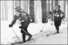
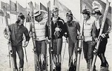
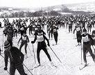

Массовое развитие лыжных гонок
Лыжные гонки впервые стали проводиться на территории скандинавских стран во второй половине восемнадцатого века, ну а первое в истории лыжных гонок официальное первенство лыжных гонщиков состоялось в 1767 году, в Норвегии. В конце девятнадцатого - начале двадцатого века в многих странах лыжные гонки стали массово развиваться. Появились лыжные клубы. С девяностых годов девятнадцатого века в Скандинавии проходят международные турниры по лыжным гонкам. Самыми популярными стали Холменколленские игры, проводившиеся в Норвегии с 1883 года 
На основе лыжных гонок появились Северные игры, которые появились в 1901 году, и стали проводиться раз в четыре года, в них участвовали спортсмены Финляндии и Швеции,ну а с 1913 года и Норвегии. Эти игры проводятся на протяжении всей истории лыжных гонок. Ну а в России первые соревнования лыжных гонщиков состоялись в Санкт-Петербурге в 1894 году.
А уже в 1910 году на Международном конгрессе, проводившемся в Христианин, позднее ставшим Осло, основали Международную лыжную комиссию. В 1910 году провели первый чемпионат России. В 1924 г. появилась FIS - ФИС Международная федерация лыжного спорта. Она и до сих пор отвечает за развитие лыжных гонок, а также прыжков на лыжах с трамплина, горнолыжный спорт, лыжное двоеборье, фристайл.